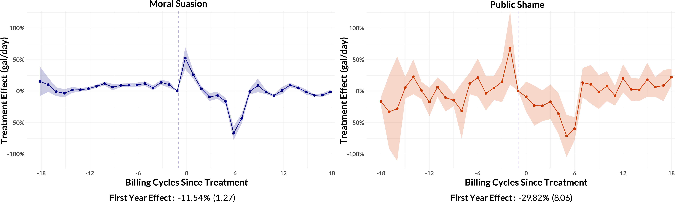
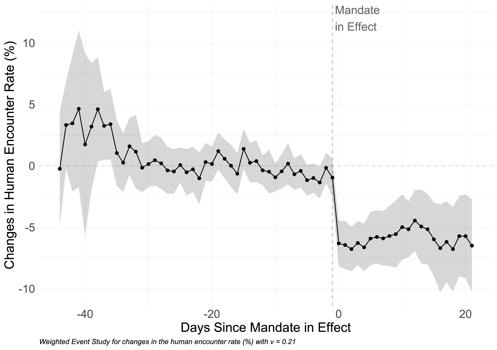
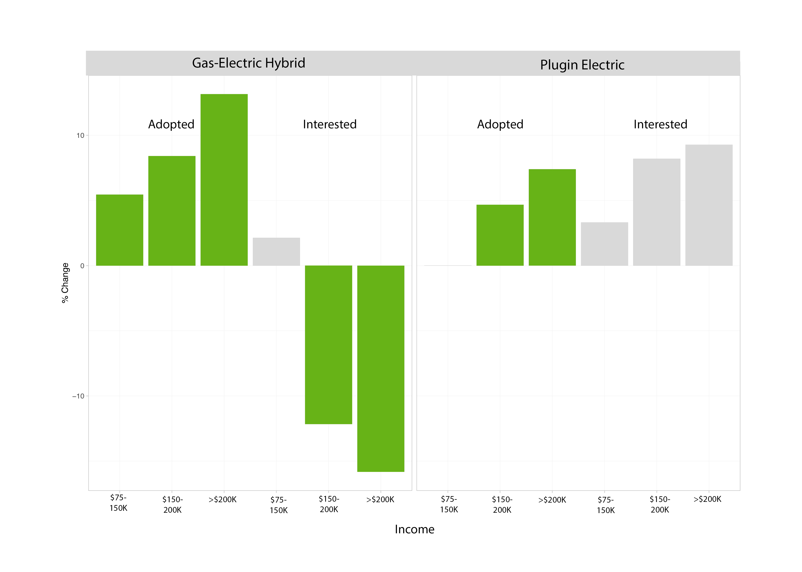
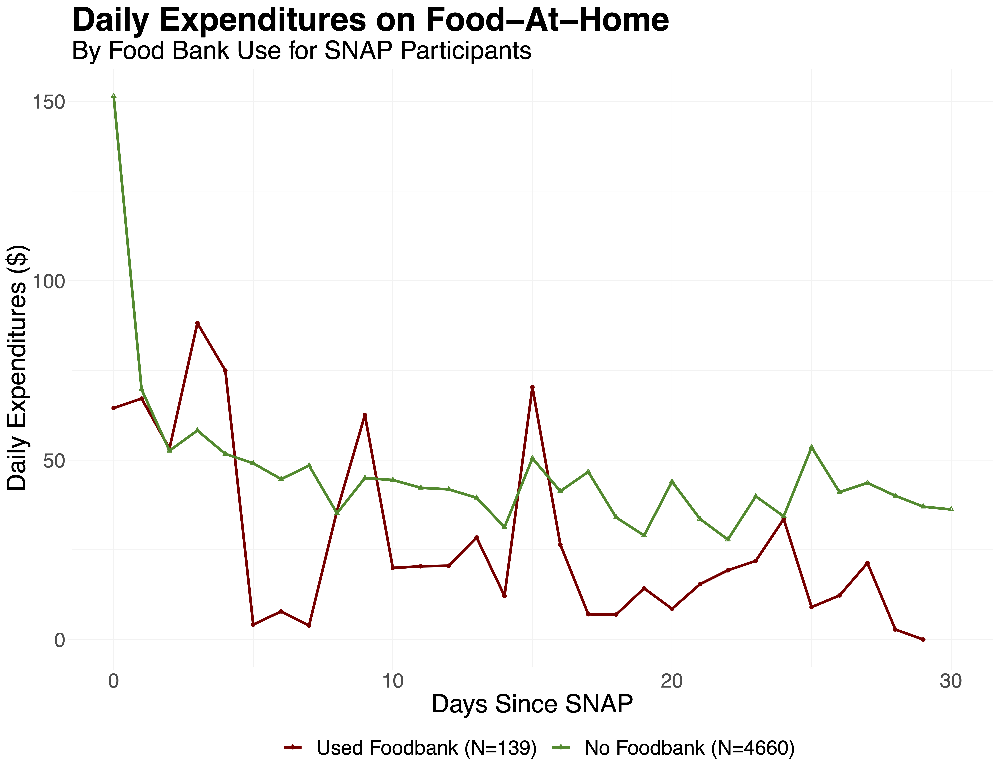

Research
Research Papers
Culpable Consumption: Residential Response to Price and Non-Price Water Conservation Measures (JOB MARKET PAPER)

Abstract: When reducing resource consumption is necessary during temporary scarcity, what policy instrument is best to maximize conservation? Using unique variation in price and behavioral policy instruments, I separately identify residential water users' responses to price and non-price drought policy instruments. Using water use data for 300,000 single family homes in the San Francisco Bay Area before, during, and after the 2015-2016 drought emergency, I first characterize differences in and changes to consumption patterns for both typical and high-usage patterns. Next, I take advantage of cross-sectional variation in prices across the utility district to obtain causal estimates of medium/long-run price elasticities prior to drought and show how price-responsiveness for both typical and high-usage households changes during extreme drought. I employ a pseudo-instrument approach coupled with flexible lagged consumption distribution controls to address simultaneity and mean reversion concerns. Nesting behavioral instrument event studies into the water demand model, I find that public shaming induced the greatest short-run reductions in water use even after households were exposed to moral suasion. Moral suasion on its own was the next most effective, with roughly half the conservation response. Finally, I show how the necessary price increases to match would benearly impossible in current policy contexts.
Culpable Consumption: Residential Response to Price and Non-Price Water Conservation Measures (JOB MARKET PAPER)
Abstract: When reducing resource consumption is necessary during temporary scarcity, what policy instrument is best to maximize conservation? Using unique variation in price and behavioral policy instruments, I separately identify residential water users' responses to price and non-price drought policy instruments. Using water use data for 300,000 single family homes in the San Francisco Bay Area before, during, and after the 2015-2016 drought emergency, I first characterize differences in and changes to consumption patterns for both typical and high-usage patterns. Next, I take advantage of cross-sectional variation in prices across the utility district to obtain causal estimates of medium/long-run price elasticities prior to drought and show how price-responsiveness for both typical and high-usage households changes during extreme drought. I employ a pseudo-instrument approach coupled with flexible lagged consumption distribution controls to address simultaneity and mean reversion concerns. Nesting behavioral instrument event studies into the water demand model, I find that public shaming induced the greatest short-run reductions in water use even after households were exposed to moral suasion. Moral suasion on its own was the next most effective, with roughly half the conservation response. Finally, I show how the necessary price increases to match would benearly impossible in current policy contexts.
Are we #stayinghome to Flatten the Curve?

Abstract: The recent spread of COVID-19 across the U.S. led to concerted efforts by states to ``flatten the curve" through the adoption of stay-at-home mandates that encourage individuals to reduce travel and maintain social distance. Combining data on changes in travel activity with COVID-19 health outcomes and state policy adoption timing, we characterize nationwide changes in mobility patterns and isolate the portion attributable to statewide mandates. We find evidence of dramatic nationwide declines in mobility prior to adoption of any statewide mandates. Once states adopt a mandate, we estimate further mandate-induced declines between 2.1 and 7.0 percentage points across methods that account for states' differences in travel behavior prior to policy adoption. In addition, we investigate the effects of stay-at-home mandates on changes in COVID-19 health outcomes while controlling for pre-trends and observed pre-treatment mobility patterns. We estimate mandate-induced declines between 0.13 and 0.17 in deaths (5.6 to 6.0 in hospitalizations) per 100 thousand across methods. Across 43 adopting states, this represents 23,366-30,144 fewer deaths (and roughly one million averted hospitalizations) for the months of March and April - which indicates that death rates could have been 42-54% higher had states not adopted statewide policies. We further find evidence that changes in mobility patterns prior to adoption of statewide policies also played a role in reducing COVID-19 mortality and morbidity. Adding in averted deaths due to pre-mandate social distancing behavior, we estimate a total of 48-71,000 averted deaths from COVID-19 for the two-month period. Given that the actual COVID-19 death toll for March and April was 55,922, our estimates suggest that deaths would have been 1.86-2.27 times what they were absent any stay-at-home mandates during this period. These estimates represent a lower bound on the health impacts of stay-at-home policies, as they do not account for spillovers or undercounting of COVID-19 mortality. Our findings indicate that early behavior changes and later statewide policies reduced death rates and helped attenuate the negative consequences of COVID-19. Further, our findings of substantial reductions in mobility prior to state-level policies convey important policy implications for re-opening.
Tree-based Matching on Structural Equation Model Parameters
Abstract: Understanding causal effects of a treatment is often of interest in the social sciences. When treatments cannot be randomly assigned, researchers must ensure that treated and untreated participants are balanced on covariates before estimating treatment effects. Conventional practices are useful in matching such that treated and untreated participants have similar average values on their covariates. However, situations arise in which a researcher may instead want to match on model parameters. We propose an algorithm, Causal Mplus Trees, which uses decision trees to match on structural equation model parameters and estimates conditional average treatment effects in each node. We provide a proof of concept using two small simulation studies and demonstrate its application using COVID-19 data.
Publications
Clustering Life Course to Understand the Heterogeneous Effects of Life Events, Gender, and Generation on Habitual Travel Modes
Abstract: Daily transportation mode choice is largely habitual, but transitions between life events may disrupt travel habits and can shift choices between alternative transportation modes. Although much is known about general mode switches following life event transitions, less is understood about differences that may exist between subpopulations, especially from a long-term perspective. Understanding these differences will help planners and policymakers introduce more targeted policy interventions to promote sustainable transportation modes and inform longer-term predictions. Extending beyond existing literature, we use data collected from a retrospective survey to investigate the effects of life course events on mode use situated within different long-term life trajectory contexts. We apply a machine-learning method called joint social sequence clustering to define five distinct and interpretable cohorts based on trajectory patterns in family and career domains over their life courses. We use these patterns as an innovative contextual system to investigate (1) the heterogeneous effects of life events on travel mode use and (2) further differentiation between gender and generation groups in these life event effects. We find that events occurring relatively early in life are more strongly associated with changes in mode-use behavior, and that mode use can also be affected by the relative order of events. This timing and order effect can have lasting impacts on mode use aggregated over entire life cycles: members of our “Have-it-alls” cohort-who finish their education, start working, partner up, and have children early in life-ramp up car use at each event, resulting in the highest rate of car use occurring the earliest among all the cohorts. Women drive more when having children primarily when their family formation and career formation are intertwined early in life, and younger generations rely relatively more on car use during familial events when their careers have a later start.
Describing the users: Understanding adoption of and interest in shared, electrified, and automated transportation in the San Francisco Bay Area

Abstract: Emerging technologies and services stand poised to transform the transportation system, with large implications for energy use and mobility. The degree and speed of these impacts depend largely on who adopts these innovations and how quickly. Leveraging data from a novel survey of San Francisco Bay Area residents, we analyze adoption patterns for shared mobility, electrified vehicle technologies, and vehicle automation. We find that ride-hailing and adaptive cruise control have penetrated the market more extensively than have electrified vehicles or car-sharing services. Over half of respondents have adopted or expressed interest in adopting all levels of vehicle automation. Overall, there is substantial potential for market growth for the technologies and services we analyzed. Using county fixed effects regressions, we investigate which individual and location-level factors correlate to adoption and interest. We find that, although higher-income people are disproportionately represented among current adopters of most new technologies and services, low to middle-income people are just as likely to have adopted pooled ride-hailing. Younger generations have high interest in automated and electrified vehicles relative to their current adoption of these technologies, suggesting that young people could contribute substantially to future market growth—as they are doing for ride-hailing. We find no evidence that longer commutes present a barrier to plug-in electric vehicle adoption. Finally, women are less likely than men to adopt and/or be interested in adopting most new transportation technologies, with the exception of ride-hailing; designing or marketing technologies with women’s preferences in mind could contribute to future market expansion.
In Progress
Food for Thought: How Food Banks Mitigate the SNAP Benefit Cycle

Abstract: Many recent works have documented the existence of the “SNAP Benefit Cycle” in which a non-negligible portion of enrolled households exhaust their benefits early in the benefit month. Lack of benefits late in the month carries large consequences, with negative impacts ranging from reduced energy intake and nutritional content, to increased likelihood of hypoglycemia and pregnancy-related emergency room admissions, along with lowered test performance and increased disciplinary action for students. These effects diminish or are otherwise nonexistent for SNAP households that exhibit consumption smoothing. The ability for low-income households to complement resources from federal poverty programs with a local public good has major implications for household welfare and the value of food bank networks. This paper investigates the extent to which SNAP participants in California utilize food bank resources to augment consumption throughout the benefit month.
A Reputation For the Good Stuff: User Feedback Signaling and the Deep Web Market Silk Road
Abstract: Despite complete user anonymity, asymmetrical information, and incomplete enforcement mechanisms, the deep web market Silk Road facilitated approximately $200 million in illegal drug sales in 34 months. This study tests how the site’s reputation system facilitated successful transactions and how user feedback functioned as the primary signal of seller quality in the absence of formal contract enforcement. Using novel data from the site on marijuana, amphetamine, and meth transactions, listings, and vendors, I find strong evidence that consumers engaged with the site’s reputation system and relied on both item and seller-level information. Hedonic regressions provide evidence of a “bad news” learning environment, estimating a 3 to 11% price discount for negative item reviews. Seller ratings are found to act as an effective proxy for permanent seller characteristics, and named trains act as a primary source of quality (and price) differentiation for marijuana. I find no evidence of price penalties or signal heterogeneity for new sellers. This study is the first to shed light on the value of reputation on the deep web’s largest marketplace, yielding new insight into the mechanisms modern markets use to overcome social distance and prevent market failure.